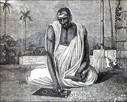

Brahmagupta
Birth Date:598 AD
Area of interest
- Mathematics
Who was Brahmagupta?
Brahmagupta was an Indian mathematician, born in 598 AD in Bhinmal, a state of Rajhastan, India. He spent most of his life in Bhinmal which was under the rule of King Vyaghramukha. He was the head of the astronomical observatory at Ujjain which was the center of mathematics in India witnessing the work of many extraordinary mathematicians. {kind=link}
Early Life and Work
Brahmagupta was an Indian mathematician, born in 598 AD in Bhinmal, a state of Rajhastan, India. He spent most of his life in Bhinmal which was under the rule of King Vyaghramukha. He was the head of the astronomical observatory at Ujjain which was the center of mathematics in India witnessing the work of many extraordinary mathematicians. Brahmagupta wrote many textbooks for mathematics and astronomy while he was in Ujjain. These include ‘Durkeamynarda’ (672), ‘Khandakhadyaka’ (665), ‘Brahmasphutasiddhanta’ (628) and ‘Cadamakela’ (624). The ‘Brahmasphutasiddhanta’ meaning the ‘Corrected Treatise of Brahma’ is one of his well-known works. It contains a lot of criticism on the work of his rival mathematicians. Brahmagupta had many discrepancies with his fellow mathematicians and most of the chapters of this book talked about the loopholes in their theories.
Contributions to Mathematics
One of the most significant input of Brahmagupta to mathematics was the introduction of ‘zero’ to the number system which stood for ‘nothing’. His work the ‘Brahmasphutasiddhanta’ contained many mathematical findings written in verse form. It had many rules of arithmetic which is part of the mathematical solutions now. These are ‘A positive number multiplied by a positive number is positive.’, ‘A positive number multiplied by a negative number is negative’, ‘A negative number multiplied by a positive number is negative’ and ‘A negative number multiplied by a negative number is positive’. The book also consisted of many geometrical theories like the ‘Pythagorean Theorem’ for a right angle triangle. Brahmagupta was the one to give the area of a triangle and the important rules of trigonometry such as values of the sin function. He introduced the formula for cyclic quadrilaterals. He also gave the value of ‘Pi’ as square root ten to be accurate and 3 as the practical value. Additionally he introduced the concept of negative numbers.